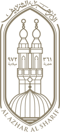

مميز

إطلاق المسابقة الدولية لحفظ القرآن الكريم
يعلن الأزهر الشريف عن فتح باب المشاركة في المسابقة الدولية السنوية وفق الضوابط والمواعيد المعلنة.
قراءة المزيد
بوابة الأزهر الإلكترونية


ناقش الاجتماع خطط تطوير الخدمات المؤسسية وتعزيز التواصل مع قطاعات الأزهر المختلفة.
اقرأ المزيد
تناول اللقاء سبل دعم المبادرات العلمية والثقافية المشتركة وتبادل الخبرات.
اقرأ المزيد
تستهدف التوجيهات توسيع نطاق المبادرات المجتمعية والوصول إلى الفئات الأكثر احتياجًا.
اقرأ المزيدشاهد أحدث الفعاليات واللقاءات

استقبال وفود دولية لمناقشة قضايا التعايش السلمي
انطلاق الدورة الخمسين للمسابقة العالمية
خدمات طبية مجانية للأسر الأولى بالرعاية
يعلن الأزهر الشريف عن فتح باب المشاركة في المسابقة الدولية السنوية وفق الضوابط والمواعيد المعلنة.
قراءة المزيد
تابع الإعلانات الرسمية وشروط التقديم والمواعيد المقررة للوظائف والفرص المتاحة بقطاعات الأزهر.
قراءة المزيدأدوات حسابية شرعية دقيقة


أجابت لجنة الفتوى بالأزهر الشريف على سؤال حول حكم إخراج الزكاة على الأموال التي يدخرها الشخص لغرض التعليم أو الزواج...
اقرأ الفتوى كاملةإجابات مختصرة عن أكثر الخدمات والاستفسارات ورودًا إلى بوابة الأزهر الإلكترونية